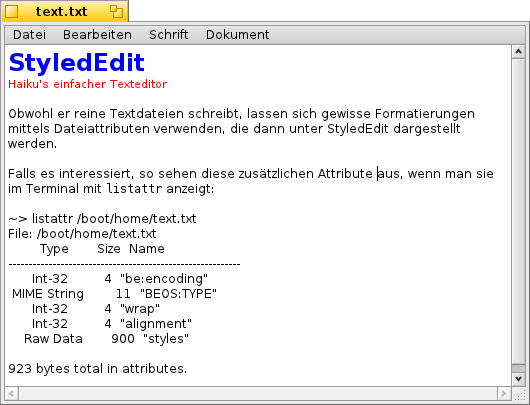

Deutsch
Deutsch Català
Català English
English Español
Español Français
Français Italiano
Italiano Magyar
Magyar Polski
Polski Português
Português Português (Brazil)
Português (Brazil) Română
Română Slovenčina
Slovenčina Suomi
Suomi Svenska
Svenska 中文 ［中文］
中文 ［中文］ Русский
Русский Українська
Українська 日本語
日本語 StyledEdit
StyledEdit
| Deskbar: | ||
| Ort: | /boot/system/apps/StyledEdit | |
| Einstellungen: | keine |
Haikus einfacher Texteditor schreibt reine Textdateien. Dennoch lassen sich gewisse Formatierungen mittels Dateiattributen verwenden, die in Haikus Texteditor dargestellt werden.
Falls es interessiert, so sehen diese zusätzlichen Attribute aus, wenn man sie im Terminal mit listattr anzeigt:
~> listattr /boot/home/Desktop/test.txt
File: /boot/home/Desktop/test.txt
Type Size Name
----------- --------- -------------------------------
Int-32 4 "be:encoding"
MIME String 11 "BEOS:TYPE"
Int-32 4 "wrap"
Int-32 4 "alignment"
Raw Data 1048 "styles"
1071 bytes total in attributes.
Wie man sieht, sind sämtliche Möglichkeiten zur Formatierung im Menü von Texteditor vorhanden: Zeilenumbruch ("line wrapping (on/off)") und Ausrichtung ("alignment (left/center/right)"); beide in einem eigenen Attribut. In einem weiteren befindet sich Schriftart, Größe und Farbe jedes Zeichens.
Auf alle Fälle ist es eine nette Idee, die Möglichkeit für bunten Text in unterschiedlichen Schriften und Größen zu haben, während es sich immer noch um eine reine Textdatei handelt. Damit ist zum Beispiel eine ReadMe.txt Datei von jeder Plattform aus in einer Konsole lesbar und hat immer noch ein bisschen Style, wenn man sie unter Haiku doppelklickt.
Die eigentliche Bedienung von Texteditor ist so einfach, dass sich eine Erklärung für jeden der banalen Menüpunkte erübrigt. Man schreibt einfach seinen Text runter, markiert die zu formatierenden Wörter und wählt die entsprechenden Einträge für Schrift, Größe und Farbe aus dem Menü. Zeilenumbruch und Ausrichtung aus dem Menü lassen sich nur auf die gesamte Datei anwenden.